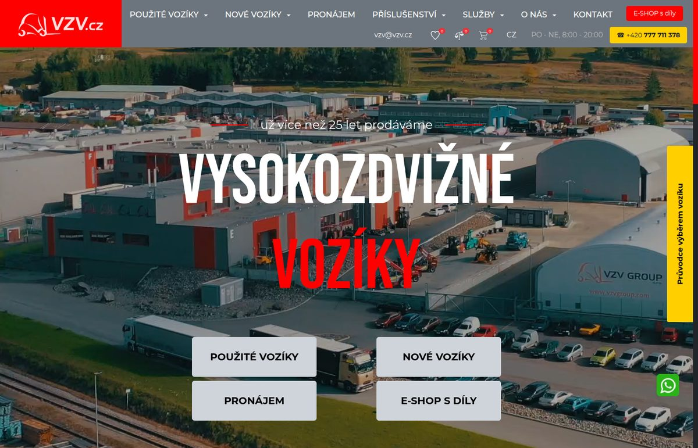
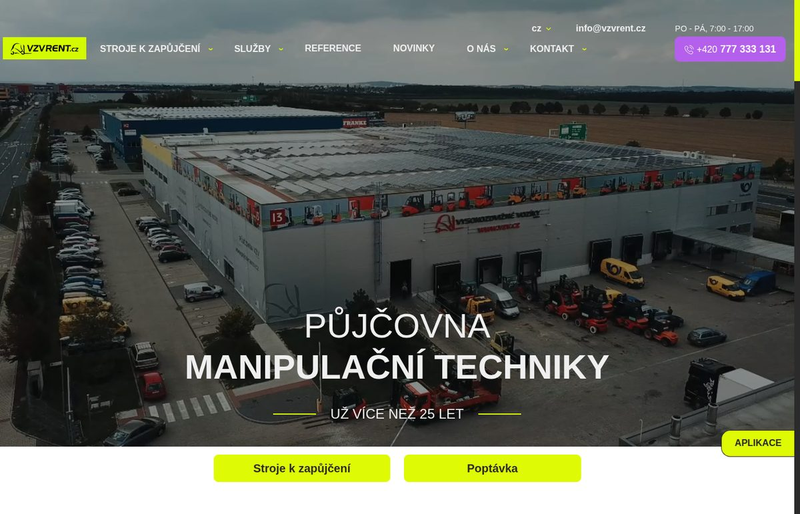
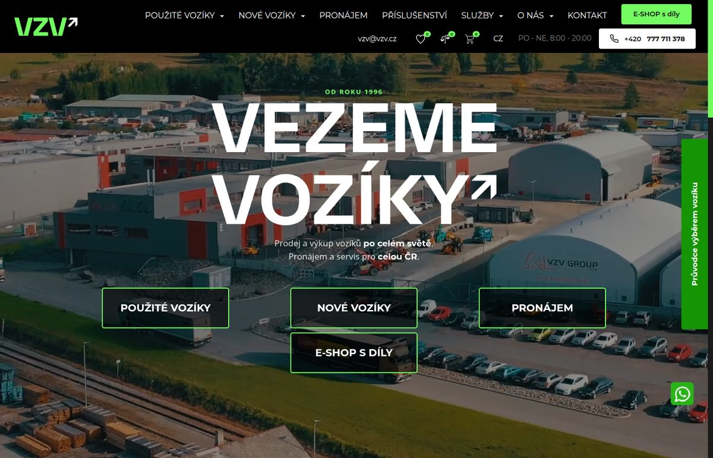
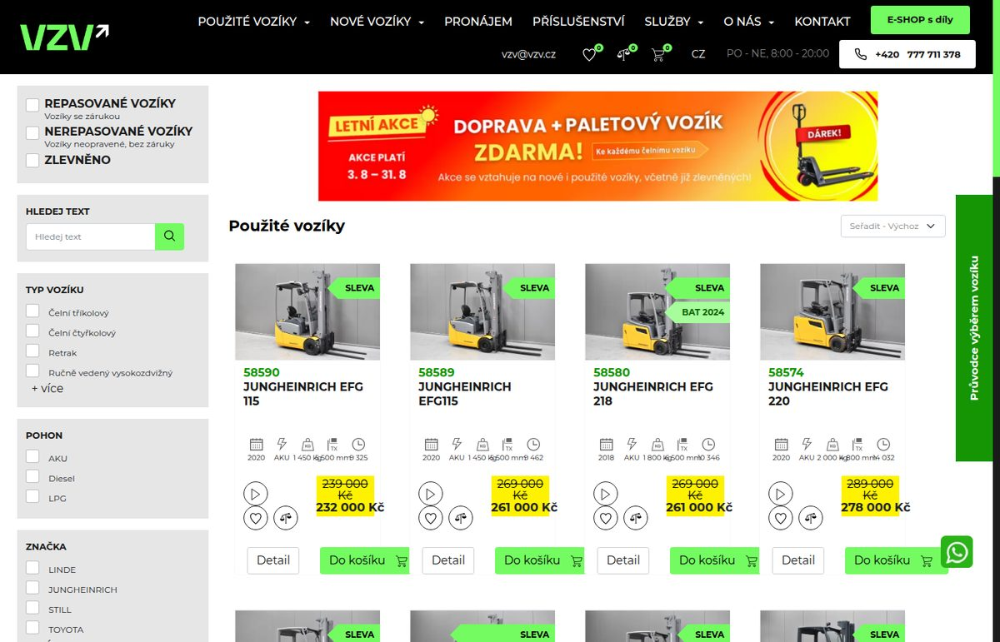
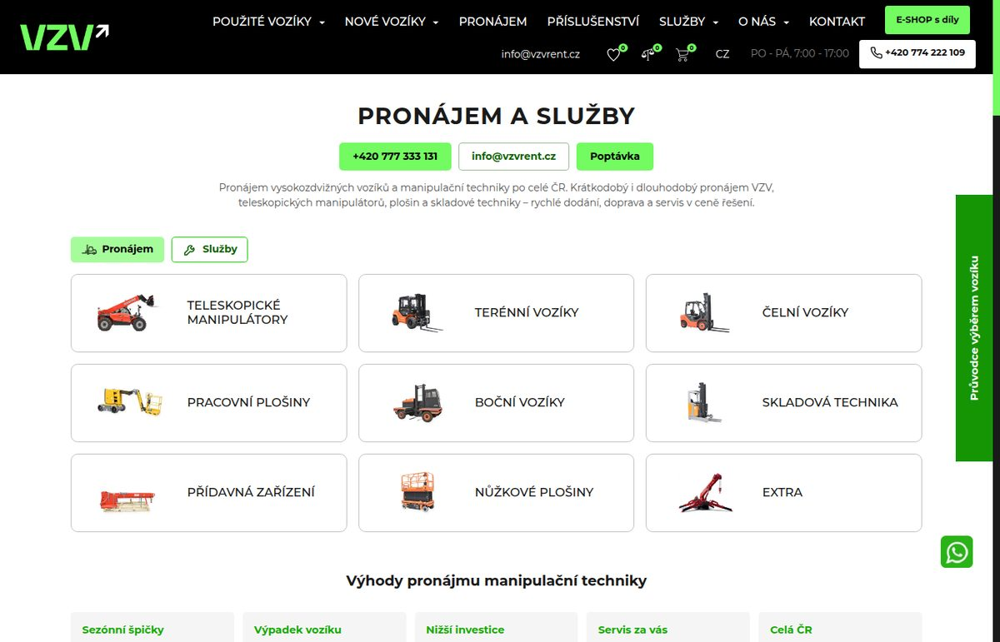
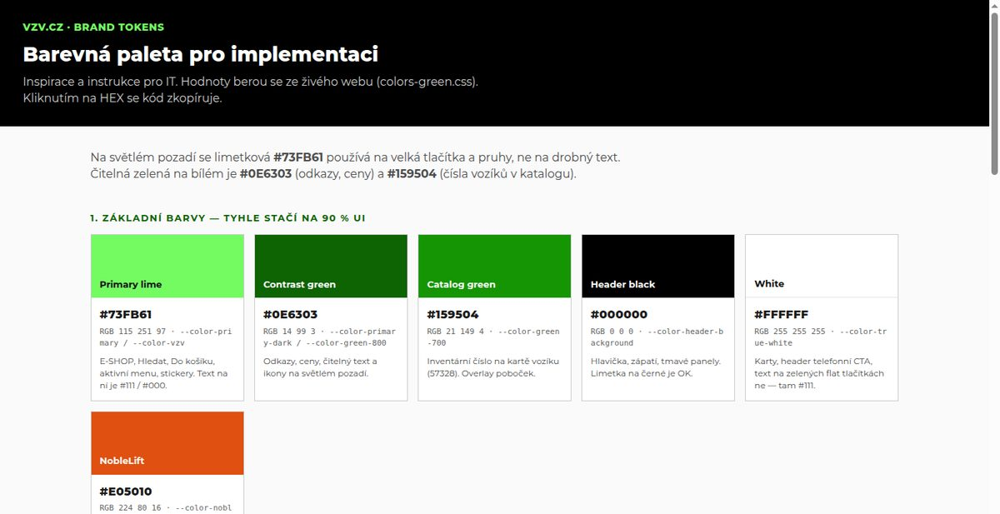

VZV.cz · 2026
From two brands
to one green VZV
Red VZV.cz and yellow VZVRENT.cz become a single black-and-green site. Sale, rental and service live together.
VZV.cz was red
VZVRENT.cz was yellow
New VZV is lime on black
Before
Two websites, two colors

vzv.cz — red logo, red header, red claim

vzvrent.cz — yellow logo, yellow CTAs, rental only
After
One black header, green VZV mark

New vzv.cz — black chrome, lime wordmark, VEZEME VOZÍKY
What changed on VZV.cz
Red UI → black + green
- Logo: red forklift plate → green VZV↗
- Header: red bar → black, lime E-SHOP, white phone
- Claim: red “VOZÍKY” → white + green arrow
- Buttons and links: red → lime fill / #0E6303 text
- Listing cards: lime SLEVA, black strikethrough on yellow price
- Brand tokens documented for IT

Catalog — green numbers, lime badges, lime Do košíku
VZVRENT → VZV.cz
Rental content is now inside VZV
The whole půjčovna from vzvrent.cz (machines, services, poptávka, contacts) sits under Pronájem on the new green site — same information, VZV colors.
Before — separate vzvrent.cz

After — /pujcovna-vzv on VZV.cz
System
Black + green palette
#73FB61 primary lime
#0E6303 text on white
#159504 catalog numbers
#000000 header / dark panels
Lime on black. Readable green on white. Old red and VZVRENT yellow stay only as “dříve” marks if we tell the rebrand story.

IT color sheet on the prototype
In short
One site.
One green VZV.
- Sale from the old red vzv.cz — restyled black / green
- Rental from vzvrent.cz — moved into Pronájem on VZV.cz
- Same machines, services and story: Měníme tvář, spolehlivost zůstává
Prototype: new VZV.cz homepage
· live red vzv.cz
· live vzvrent.cz